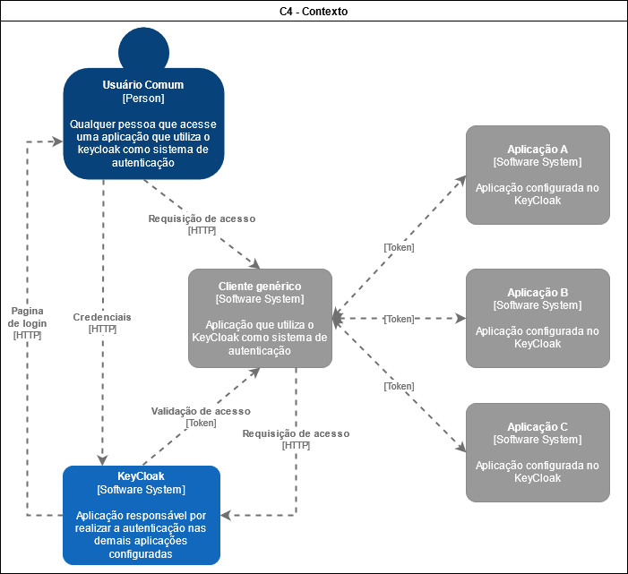

Documentação Arquitetural da funcionalidade Single-Sing On(SSO) da Aplicação Keycloak
Autores
- Autor: Anderson Vidal
- Matricula: 117110162
- Contato: anderson.vidal@ccc.ufcg.edu.br
- Projeto a ser documentado: Keycloak
Descrição Arquitetural - Keycloak
Este documento descreve parte da arquitetura do projeto Keycloak baseado no padrão do modelo C4, focando especialmente na sua funcionalidade principal de Single-Sign On (SSO) para aplicações cadastradas.
Descrição Geral sobre o Keycloak
Keycloak é uma aplicação OpenSource para gerenciamento de identidades e acesso para aplicações e serviços modernos. Com ele, não é necessário se preocupar com o armazenamento de credenciais de usuários nem com o desenvolvimento de serviços de autenticação. Além disso, ele fornece outras ferramentas para lidar com a segurança no acesso a aplicações. Para mais detalhes sobre a aplicação, visitar o site oficial.
Keycloak - Single-Sign On (SSO)
Sobre o serviço SSO
O objetivo da funcionalidade Single-Sign On (SSO) é possibilitar que o usuário faça login apenas uma vez para acessar todos os sistemas que estejam configurados no keycloak, com um único serviço de autenticação para permitir que os usuários façam login em outros serviços, sem fornecer uma senha para o serviço que está sendo conectado.
Contexto
O contexto da funcionalidade SSO compreende os seguintes sistemas:
- Client genérico: é um meio no qual uma aplicação genérica está executando e é o objetivo de acesso do usuário comum. Por exemplo um browser executando uma aplicação web.
- Aplicações terceiras: são aplicações que a aplicação genérica principal acessa de alguma forma, como por exemplo, redes sociais.
- Keycloak: é a aplicação que realiza o login do usuário comum e, quando autenticado, envia um token de acesso que é utilizado pelo client para acesso as demais aplicações terceiras
No diagrama de contexto abaixo, podemos observar como se dá a comunicação entre as entidades mensionadas:
- O usuário comum requisita acesso ao cliente genérico
- O cliente genérico redireciona essa requisição para o Keycloak
- O Keycloak então responde ao usuário com uma pagina de login
- O usuário comum envia suas credenciais
- O Keycloak verifica estas credenciais de acesso e, caso válidas, devolve um token de acesso ao cliente
- O cliente genérico em posse do token agora pode acessar as aplicações terceiras com o token que dá acesso as contas do usuário comum
Neste fluxo podemos observar que não foi necessário realizar requisições de login para as aplicações A, B e C, apenas o login no Keycloak, caracterizando a funcionalidade SSO.

Containers
A integração do Keycloak é feita em um servidor pessoal ou empresarial, utilizando a tecnologia Docker para os containers que iram executar as aplicações secundárias Keycloak Security Proxy, que realiza o gerenciamento e redirecionamento das requisições para os Keycloak Servers, e o Keycloak Server, que executa as logica de negócio da aplicação. Além disso, também é utilizado uma base de dados utilizando a tecnologia Postgres que irá armazenar os dados referente aos usuários e aplicações cadastradas para acesso, além de informações da aplicação em si.
No diagrama abaixo, podemos observar os relacionamentos entre as entidades do sistema e os containers de execução do Keycloak, destacando os seguintes relacionamentos:
- O usuário genérico realiza uma requisição HTTP para autenticação de login no Keycloak
- O Keycloak Security Proxy busca pelo Keycloak Server Container de destino (as empresas/aplicações podem configurar mais de uma instancias/servides do Keycloak) e redireciona a requisição.
- O Keycloak Server verifica as credenciais do usuário em uma aplicação LDAP externa ou na base de dados no proprio servidor dependendo do tipo de aplicações que serão autenticadas.
- Quando todos os passos anteriores forem satisfeitos, uma resposta contendo o token de acesso é encaminhada do Keycloak Server para o Keycloak Security Proxy que o encaminha para a aplicação cliente.

Components
Os principais componentes envolvidos na lógica da funcionalidade de Single-Sign On (SSO) são:
- Realm: É o componente responsável por gerenciar um conjunto de usuários, credenciais, funções e grupos. Podem existir varios realms e eles são isolados uns dos outros, podendo somente gerenciar e autenticar os usuários que controlam.
- Events: É o componente responsável por receber todas os eventos que acontecem dentro do sistema para um realm específico, criando um histórico de acontecimentos que podem ser consultados posteriormente.
- Identity Brokering: serviço intermediário que conecta vários provedores de serviços com diferentes provedores de identidade. Como um serviço intermediário, o Identity Brokering é responsável por criar uma relação de confiança com um provedor de identidade (Identity Provider) externo para usar suas identidades para acessar serviços internos expostos por provedores de serviço. Estes provedores podem ser redes sociais, serviços de nuvem ou serviços parceiros.
- User Federation: é o serviço intermediário para gerenciamento de acesso a sistemas baseados em LDAP ou Active Directories que são freqüentemente utilizados por empresas.
O diagrama abaixo mostra como cada componente se relaciona. Os relacionamentos de dão da seguinte forma:
- O usuário genérico realiza uma requisição HTTP para autenticação de login no Keycloak.
- A aplicação reconhece o Realm responsavél para aquele acesso e realiza uma busca das aplicações cadastradas na base, relacionadas a este usuário, para serem autenticadas. Em seguida envia os dados de usuário para o Identity Brokering e/ou User Federation para realizar as verificações e autenticações necessárias.
- O Identity Brokering realiza uma requisição de autenticação para os Identity providers, que são as aplicações a serem autenticadas.
- O User Federation realiza chamadas LDAP para verificar as credenciais de usuário para aplicações LDAP e serviços de diretório.
- Quanto todas as autenticações forem verificadas o Identity Brokering e/ou User Federation retornam o usuário com os tokens de acesso para o Realm
- O Realm constroi uma resposta a autenticação contendo o token de acesso a para o cliente genérico e garante acesso ao usuário comum

Visão de informação
Abaixo podemos ver um diagrama de linha de vida, mostrando o caminho percorrido pela informação desde o login do usuário até o feedback de acesso para ele, como explicitado no fluxo de contexto.